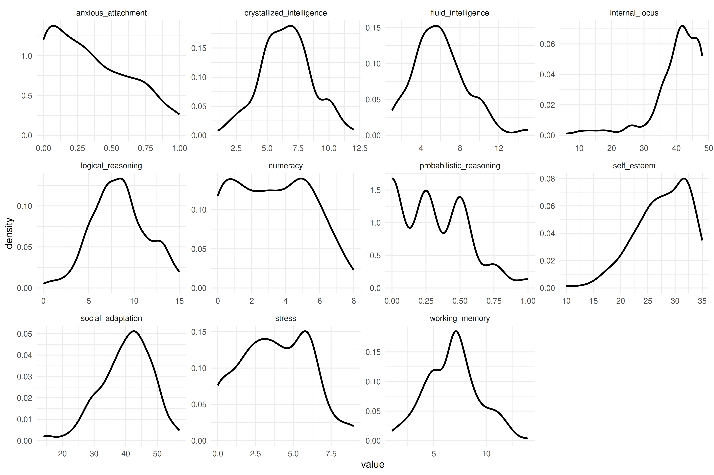

if (!require('dplyr')) install.packages('dplyr'); library('dplyr')
if (!require("DT")) install.packages("DT"); library("DT")
if (!require("ggplot2")) install.packages("ggplot2"); library("ggplot2")
if (!require("googlesheets4")) install.packages("googlesheets4"); library("googlesheets4")
if (!require("haven")) install.packages("haven"); library("haven")
if (!require("here")) install.packages("here"); library("here")
if (!require("janitor")) install.packages("janitor"); library("janitor")
if (!require("purrr")) install.packages("purrr"); library("purrr")
if (!require('readr')) install.packages('readr'); library('readr')
if (!require("readxl")) install.packages("readxl"); library("readxl")
if (!require("readODS")) install.packages("readODS"); library("readODS")
if (!require("tidyr")) install.packages("tidyr"); library("tidyr")
if (!require("waldo")) install.packages("waldo"); library("waldo")
if (!require("writexl")) install.packages("writexl"); library("writexl")
if (!require('regexplain')) remotes::install_github("gadenbuie/regexplain"); library('regexplain')4 Preparación y transformación de datos
En este capítulo vamos a aprender a importar y exportar todo tipo de archivos. También veremos como, filtrar, crear nuevas variables, seleccionar columnas, transformar bases de datos, etc.
Paquetes para este capítulo
Como en cada capítulo, crea un nuevo script de R (CNTRL+ SHIFT + N), guárdalo con el nombre/número del capítulo (i.e. capitulo4.R), copia y pega las líneas de abajo y ejecútalas.
Proyecto de RStudio del curso
En como empezar se mostró como tener un proyecto de RStudio con todos los materiales del curso. Si no lo tienes, este es el momento de hacerlo, ya que vamos a necesitar varios de los archivos del proyecto:
if (!require('usethis')) install.packages('usethis'); library('usethis')
usethis::use_course("gorkang/R_preparacion_visualizacion_datos")4.1 Importar y exportar datos
Hasta ahora hemos trabajado con data frames como mpg o gaminder, que forman parte de la instalación de alguno de los paquetes de R. Pero habitualmente trabajaremos con datos propios, por lo que necesitaremos leer uno o varios archivos.
RStudio tiene un menú para ayudar a importar datos . No obstante, aquí aprenderemos a hacerlo todo en código, para que nuestros scripts sean auto-contenidos.
Podemos ver algunas de las funciones de esta sección y cómo usarlas en la Cheatsheet importar datos
4.1.1 Importar un solo archivo
Empezaremos por la situación básica más común, cómo importar un solo archivo. Vamos a ver con más detalle los archivos CSV (comma separated values). Las funciones para importar archivos Excel, Libreoffice, SPSS, etc. tienen parámetros similares.
4.1.1.1 Archivos CSV
Usaremos las siguientes funciones del paquete readr:
Funciones para leer archivos csv
-
readr::read_csv(): valores separados por coma (“,”)
-
readr::read_csv2(): valores separados por punto y coma (“;”), típicamente usado en países de habla Hispana
-
readr::read_delim( , delim = "|"): valores separados por un delimitador arbitrario
Leemos el archivo 02-read-csv.csv de la carpeta data/files/:
DF_name = read_csv("data/files/02-read-csv.csv")Generalmente haremos esto en dos pasos. Primero guardaremos la ubicación del archivo en una variable, y después usaremos esa variable como parámetro de la función que lee los datos:
# Guardamos en la variable `name_of_file` la ubicación del archivo
name_of_file = "data/files/02-read-csv.csv"
# Usamos la función read_csv() para leer el archivo
DF_name = read_csv(name_of_file)En este manual verás que usamos name_of_file = here::here("mi/archivo.csv"). La función here::here nos ayuda a evitar problemas con la ruta a los archivos (nos devuelve la ruta absoluta). Esto suele ser importante cuando trabajamos con quarto or rmarkdown, pero normalmente lo podemos ignorar.
# En name_of_file almacenamos la ruta absoluta al archivo
name_of_file = here::here("data/files/02-read-csv.csv")
# Leemos el archivo que esta en name_of_file
DF_name = read_csv(name_of_file)
DF_name
#> # A tibble: 103 × 9
#> ...1 ID Genero Edad Educacion FollowUP condition condition2
#> <dbl> <dbl> <dbl> <dbl> <dbl> <dbl> <chr> <chr>
#> 1 4 41904 1 47 8 80 PPV_Cond1 90LInt
#> 2 5 95041 2 21 6 90 PPV_Cond1 90RInt
#> 3 6 74594 2 29 6 10 PPV_Cond1 100LInt
#> 4 15 72903 2 27 7 75 PPV_Cond1 100RInt
#> 5 16 21260 1 29 5 35 PPV_Cond1 90LInt
#> 6 18 50315 2 28 6 14 PPV_Cond1 90RInt
#> # ℹ 97 more rows
#> # ℹ 1 more variable: PPV_DECLARED <dbl>Si usamos un repositorio online para almacenar los archivos, podemos leer directamente de una URL.
URL = "https://raw.githubusercontent.com/gorkang/R_preparacion_visualizacion_datos/master/data/files/02-read-csv.csv"
read_csv(URL)La función read_csv() tiene varios parámetros muy útiles como skip o col_types (si el cursor está encima de la función, F1 os llevará a la ayuda).
Con
skippodemos saltarnos líneas del inicio del archivo. Muy útil cuando las hojas de datos no empiezan en la primera fila.Con
col_typespodemos especificar el tipo de datos que contiene cada columna (texto, números, factores…). Al ser explícitos con el tipo de datos evitamos sorpresas, y de paso reducimos el output de la Consola.
# En name_of_file almacenamos la ruta completa al archivo
name_of_file = here::here("data/files/02-read-csv.csv")
# Leemos el archivo que esta en name_of_file
read_csv(name_of_file,
skip = 0,
col_types = cols(
.default = col_double(),
condition = col_character(),
condition2 = col_character()
)
)
#> # A tibble: 103 × 9
#> ...1 ID Genero Edad Educacion FollowUP condition condition2
#> <dbl> <dbl> <dbl> <dbl> <dbl> <dbl> <chr> <chr>
#> 1 4 41904 1 47 8 80 PPV_Cond1 90LInt
#> 2 5 95041 2 21 6 90 PPV_Cond1 90RInt
#> 3 6 74594 2 29 6 10 PPV_Cond1 100LInt
#> 4 15 72903 2 27 7 75 PPV_Cond1 100RInt
#> 5 16 21260 1 29 5 35 PPV_Cond1 90LInt
#> 6 18 50315 2 28 6 14 PPV_Cond1 90RInt
#> # ℹ 97 more rows
#> # ℹ 1 more variable: PPV_DECLARED <dbl>4.1.1.2 Otros tipos de archivos
Para otros tipos de archivos usaremos otras funciones.
Archivos excel
Para leer archivos Excel podemos usar read_excel() del paquete readxl. Cada una de estas funciones tiene parámetros que nos pueden resultar muy útiles. Por ejemplo, read_excel() tiene el parámetro sheet, que nos permite seleccionar qué hoja del archivo excel leer.
name_of_file = here::here("data/files/02-read-xlsx.xlsx")
readxl::read_excel(name_of_file, sheet = 1)Archivos SPSS
Para archivos .sav usamos haven::read_sav().
Archivos Libreoffice
Para archivos .ods usamos readODS::read_ods().
Google sheets
Para poder leer una gsheet debemos:
- Crear un enlace para compartirla:
"Share" -> "General access" -> "Anyone with the link"
- Extraemos el identificador de la google sheet:
- De
https://docs.google.com/spreadsheets/d/1v3cCKaQ3akGEH8Z2Plu7qpq93GNk6Y6v337iI4KyZ2I/edit?usp=sharing
- Usaremos:
1v3cCKaQ3akGEH8Z2Plu7qpq93GNk6Y6v337iI4KyZ2I
if (!require("googlesheets4")) install.packages("googlesheets4"); library("googlesheets4")
name_of_sheet = "1v3cCKaQ3akGEH8Z2Plu7qpq93GNk6Y6v337iI4KyZ2I"
googlesheets4::read_sheet(name_of_sheet) Ejercicios - Importar datos
En el repositorio R para preparación y visualización de datos - DNSC - UAI de la Open Science Foundation podrás ver una carpeta llamada OSF_files. Si no tenéis conexión a Internet, podéis encontrar los archivos en data/files/OSF_files.
Descarga e importa los archivos que ahí aparecen, asegurándote que los nombres de columna se leen adecuadamente:
- 02-extralines-1.xlsx
- 02-extralines-2.xlsx
- 02-extralines-3.xlsx
- 02-spanish.csv
Solución
La función read_excel() tiene parámetros como skip, que permite no leer las primeras n lineas, o sheet, con la que puedes indicar que pestaña leer.
Recuerda que estás leyendo archivos excel o csv, por lo que puedes verlos en Libreoffice o Excel para saber como son.
4.1.2 Importar múltiples archivos
En ocasiones tenemos múltiples archivos en una carpeta (e.g. uno por participante) y queremos combinarlos todos en un solo data frame.
Por suerte, las funciones como read_csv() admiten un vector con varios archivos.
Para importar todos los archivos que están en la carpeta data/files/02-CSVs:
# Directorio donde se encuentran los archivos
name_of_folder = here::here("data/files/02-CSVs")
# Listamos los archivos a leer
files <- list.files(name_of_folder, full.names = TRUE)
# Leemos todos los archivos, combinándolos en un data frame
full <- read_csv(files)
full
#> # A tibble: 1,600 × 9
#> Sex Priming trialN Block Adjective Valence Answer Arrow rT
#> <chr> <chr> <dbl> <chr> <chr> <chr> <chr> <chr> <dbl>
#> 1 male Collective 1 we ofensivo negative yes left 623
#> 2 male Collective 2 we resentido negative no right 1235
#> 3 male Collective 3 we ego�sta negative yes left 335
#> 4 male Collective 4 we indiscreto negative yes left 355
#> 5 male Collective 5 we sumiso negative yes left 618
#> 6 male Collective 6 we agradable positive yes left 328
#> # ℹ 1,594 more rowsLamentablemente, cuando leamos otro tipo de archivos (e.g. .xlsx), no podemos usar la función read_csv(). Veamos una manera de hacer leer múltiples archivos que se puede usar con cualquier función para leer datos.
Usaremos map_df() del paquete purrr, que aplica la función que queramos a cada uno de los archivos que le indiquemos, uno a uno:
# Directorio donde se encuentran los archivos
name_of_folder = here::here("data/files/02-CSVs")
# Listamos los archivos a leer
files <- list.files(name_of_folder, full.names = TRUE)
# Leemos todos los archivos de uno en uno, combinándolos en un data frame
full <- purrr::map_df(files, read_csv)
# Mostramos lo que contiene full
full
#> # A tibble: 1,600 × 9
#> Sex Priming trialN Block Adjective Valence Answer Arrow rT
#> <chr> <chr> <dbl> <chr> <chr> <chr> <chr> <chr> <dbl>
#> 1 male Collective 1 we ofensivo negative yes left 623
#> 2 male Collective 2 we resentido negative no right 1235
#> 3 male Collective 3 we ego�sta negative yes left 335
#> 4 male Collective 4 we indiscreto negative yes left 355
#> 5 male Collective 5 we sumiso negative yes left 618
#> 6 male Collective 6 we agradable positive yes left 328
#> # ℹ 1,594 more rows4.1.2.1 Incluir nombres de archivos
Habitualmente será importante saber a que archivo pertenecen los datos que hemos leído.
Podemos incluir los nombres de archivo en una columna:
# Nombre de la carpeta
name_of_folder = here::here("data/files/02-CSVs")
# Listamos los archivos dentro de esa carpeta
files_simple <- list.files(name_of_folder, full.names = TRUE)
# Asignamos nombres a los elementos del vector
files = set_names(files_simple, basename(files_simple))
# Con el parámetro .id, almacenamos los nombres en la columna "file"
full2 <- map_df(files, read_csv, .id = "file")4.1.2.2 Con parametros
Añadimos parámetros a la función de lectura. En este caso, definimos el tipo de columna esperado con la función col_types(). Con esto nos aseguraremos que si alguno de los archivos tiene el tipo de datos “incorrecto”, aparecerán warnings en la importación:
name_of_folder = here::here("data/files/02-CSVs")
files <- list.files(name_of_folder, full.names = TRUE)
full <- map_df(files, read_csv,
# Ponemos los parámetros separados por comas, después de la función
col_types = cols(
.default = col_character(),
Sex = col_factor(),
trialN = col_integer(),
Valence = col_factor(),
rT = col_double()
)
)
full
#> # A tibble: 1,600 × 9
#> Sex Priming trialN Block Adjective Valence Answer Arrow rT
#> <fct> <chr> <int> <chr> <chr> <fct> <chr> <chr> <dbl>
#> 1 male Collective 1 we ofensivo negative yes left 623
#> 2 male Collective 2 we resentido negative no right 1235
#> 3 male Collective 3 we ego�sta negative yes left 335
#> 4 male Collective 4 we indiscreto negative yes left 355
#> 5 male Collective 5 we sumiso negative yes left 618
#> 6 male Collective 6 we agradable positive yes left 328
#> # ℹ 1,594 more rowsOtra manera de hacer exactamente lo mismo con map_df(). El código es algo más complejo, pero nos da más flexibilidad, y podemos usar las funciones del mismo modo que habitualmente.
name_of_folder = here::here("data/files/02-CSVs")
files <- list.files(name_of_folder, full.names = TRUE)
full2 <- purrr::map_df(1:length(files), ~ {
cli::cli_alert_info("Reading file {basename(files[.x])}")
read_csv(files[.x], col_types = cols(.default = col_character(),
Sex = col_factor(),
trialN = col_integer(),
Valence = col_factor(),
rT = col_double()
)
)
})
# Comprobamos que no hay diferencias
waldo::compare(full, full2)
#> ✔ No differencesEjercicios - Importar múltiples archivos
- Cuando más arriba importamos los archivos que están en la carpeta
data/files/02-CSVs:
- ¿Qué archivos importamos exactamente?
¿Ves algún problema en lo que hicimos?
Revisa el número de filas y el contenido de la variable files.
El resultado final debería ser así:
#> # A tibble: 1,200 × 9
#> Sex Priming trialN Block Adjective Valence Answer Arrow rT
#> <chr> <chr> <dbl> <chr> <chr> <chr> <chr> <chr> <dbl>
#> 1 male Collective 1 we ofensivo negative yes left 623
#> 2 male Collective 2 we resentido negative no right 1235
#> 3 male Collective 3 we ego�sta negative yes left 335
#> 4 male Collective 4 we indiscreto negative yes left 355
#> 5 male Collective 5 we sumiso negative yes left 618
#> 6 male Collective 6 we agradable positive yes left 328
#> # ℹ 1,194 more rows- Leed los archivos .xlsx de la carpeta
data/files/02-XLSs, combinándolos en un único DF. El resultado final debería ser como se ve a continuación:
Pista
Tendréis que usar list.files() usando el parámetro pattern
- Te recomiendo abrir los archivos excel para ver su estructura, las pestañas que tienen… ahí te darás cuenta de que necesitas otros parámetros de
read_xlsx()comosheetoskip
#> # A tibble: 1,200 × 9
#> Sex Priming trialN Block Adjective Valence Answer Arrow rT
#> <chr> <chr> <dbl> <chr> <chr> <chr> <chr> <chr> <dbl>
#> 1 male Collective 1 we ofensivo negative yes left 623
#> 2 male Collective 2 we resentido negative no right 1235
#> 3 male Collective 3 we ego�sta negative yes left 335
#> 4 male Collective 4 we indiscreto negative yes left 355
#> 5 male Collective 5 we sumiso negative yes left 618
#> 6 male Collective 6 we agradable positive yes left 328
#> # ℹ 1,194 more rows4.1.3 Limpiar nombres de columnas
El paquete {janitor} tiene una función muy útil llamada clean_names() que aplica algunas reglas sencillas para estandarizar los nombres de columnas:
DF_name = read_csv(here::here("data/files/02-read-csv.csv"))
names(DF_name)
#> [1] "...1" "ID" "Genero" "Edad"
#> [5] "Educacion" "FollowUP" "condition" "condition2"
#> [9] "PPV_DECLARED"
DF_names_clean = janitor::clean_names(DF_name)
names(DF_names_clean)
#> [1] "x1" "id" "genero" "edad"
#> [5] "educacion" "follow_up" "condition" "condition2"
#> [9] "ppv_declared"4.1.4 Exportar datos
Muchas veces guardaremos los datos una vez procesados. Esto se puede hacer con la familia de funciones write_*.
Siguiendo el ejercicio anterior, después de leer los archivos excel de una carpeta y limpiar los nombres de columna, queremos guardar el data frame resultante en la carpeta data_clean (¡es importante asegurarnos que esa carpeta existe!).
4.1.4.1 Archivos CSV
Si queremos que el archivo guardado sea un csv, usaremos write_csv() del paquete {readr}.
# Lo que hicimos antes, leemos todos los archivos excel de un directorio
name_of_folder = here::here("data/files/02-XLSs")
files <- list.files(name_of_folder, pattern = "xls", full.names = TRUE)
DF_all = janitor::clean_names(map_df(files, read_xlsx, sheet = 2, skip = 5))
readr::write_csv(DF_all, "data_clean/DF_all.csv")4.1.4.2 Otros Archivos
La función a usar cambiará en función del formato que queramos:
-
xlsx:writexl::write_xlsx()
-
sav:haven::write_sav()
-
ods:readODS::write_ods() -
rds:readr::write_rds()
writexl::write_xlsx(DF_all, "data_clean/DF_all.xlsx")
haven::write_sav(DF_all, "data_clean/DF_all.sav")
readODS::write_ods(DF_all, "data_clean/DF_all.ods")
readr::write_rds(DF_all, "data_clean/DF_all.rds")4.2 Preparación y transformación de datos
Para la preparación y transformación de datos usaremos fundamentalmente dplyr. Hay otros paquetes más rápidos como data.table. Si trabajas con datos gigantescos (millones de filas), sin duda notarás la diferencia. La desventaja es que la sintaxis es (habitualmente) menos intuitiva.
4.2.1 The pipe
Con ggplot enlazábamos instrucciones (capas) usando +. Cuando trabajemos con datos, usaremos “tuberias” (pipes) |>.
Las pipes |> o %>% (CONTROL + SHIFT + M) nos permiten enlazar operaciones de transformación de datos de manera sencilla. Simplemente encadenamos instrucciones, poniendo una pipe para que cada instrucción llegue a la siguiente linea.
Imaginad que queremos realizar una serie de operaciones sobre unos datos, y guardarlos en un data frame llamado DATOS_limpios. Partimos de unos DATOS_originales, seleccionamos las columnas que nos interesan y filtramos los datos.
De manera esquemática:
DATOS_limpios =
DATOS_originales |>
seleccionamos_columnas(parámetros) |>
filtramos_datos(parámetros)
4.2.2 Tidy data
Existen tres sencillas reglas que definen la Tidy data:
- Cada variable tiene su columna propia
- Cada observación tiene su fila propia
- Cada valor tiene su celda propia
Las ventajas fundamentales son:
- Uso de una manera consistente de trabajar, que se alinea con el tidyverse
- Facilidad para trabajar con la lógica vectorizada
Por ejemplo. De manera muy sencilla y rápida podemos crear una nueva columna realizando algún cómputo arbitrario con los valores de otra columna.
# Computa ratio por 100,000
table1 |>
mutate(rate_per_100K = cases / population * 100000)
#> # A tibble: 6 × 5
#> country year cases population rate_per_100K
#> <chr> <dbl> <dbl> <dbl> <dbl>
#> 1 Afghanistan 1999 745 19987071 3.73
#> 2 Afghanistan 2000 2666 20595360 12.9
#> 3 Brazil 1999 37737 172006362 21.9
#> 4 Brazil 2000 80488 174504898 46.1
#> 5 China 1999 212258 1272915272 16.7
#> 6 China 2000 213766 1280428583 16.7O contar el número de casos por valor de una variable.
# Cuenta cuantos registros tenemos por año
table1 |>
count(year)
#> # A tibble: 2 × 2
#> year n
#> <dbl> <int>
#> 1 1999 3
#> 2 2000 3
# Cuenta cuantos registros tenemos por año y país
table1 |>
count(year, country)
#> # A tibble: 6 × 3
#> year country n
#> <dbl> <chr> <int>
#> 1 1999 Afghanistan 1
#> 2 1999 Brazil 1
#> 3 1999 China 1
#> 4 2000 Afghanistan 1
#> 5 2000 Brazil 1
#> 6 2000 China 1También podemos hacer cosas algo más complejas, por ejemplo, aplicar funciones como across o where(is.numeric) para sumar todas las columnas de tipo numérico.
table1 |>
mutate(suma_absurda = rowSums(across(where(is.numeric))))
#> # A tibble: 6 × 5
#> country year cases population suma_absurda
#> <chr> <dbl> <dbl> <dbl> <dbl>
#> 1 Afghanistan 1999 745 19987071 19989815
#> 2 Afghanistan 2000 2666 20595360 20600026
#> 3 Brazil 1999 37737 172006362 172046098
#> 4 Brazil 2000 80488 174504898 174587386
#> 5 China 1999 212258 1272915272 1273129529
#> 6 China 2000 213766 1280428583 1280644349Y, como no, ggplot funciona con datos tidy, en formato long.
4.2.3 Verbos dplyr
Usaremos {dplyr}, un paquete muy potente para la manipulación de datos. Su sintaxis, además, es bastante intuitiva (¡son verbos en inglés!).
Podemos ver más detalle y ejemplos en la Cheatsheet de dplyr.
Verbos esenciales
- filter(): filtrar filas
- arrange(): ordenar filas
- select(): seleccionar columnas
- rename(): renombrar columnas
- mutate(): crear columnas, modificar columnas, etc.
Tabla resumen dplyr
4.2.3.1 Filtrar y ordenar filas
A partir de los siguientes datos:
name_of_file = here::here("data/files/02-read-csv.csv")
DF_name = read_csv(name_of_file)
DF_name
#> # A tibble: 103 × 9
#> ...1 ID Genero Edad Educacion FollowUP condition condition2
#> <dbl> <dbl> <dbl> <dbl> <dbl> <dbl> <chr> <chr>
#> 1 4 41904 1 47 8 80 PPV_Cond1 90LInt
#> 2 5 95041 2 21 6 90 PPV_Cond1 90RInt
#> 3 6 74594 2 29 6 10 PPV_Cond1 100LInt
#> 4 15 72903 2 27 7 75 PPV_Cond1 100RInt
#> 5 16 21260 1 29 5 35 PPV_Cond1 90LInt
#> 6 18 50315 2 28 6 14 PPV_Cond1 90RInt
#> # ℹ 97 more rows
#> # ℹ 1 more variable: PPV_DECLARED <dbl>Podemos usar el verbo filter() para mostrar las filas que cumplan cualquier regla lógica o combinación de reglas (e.g. Genero == 1 & Edad >= 30).
En el ejemplo siguiente, nos quedamos con las filas donde el valor de Educación sea mayor de 8:
DF_name |>
filter(Educacion > 8)
#> # A tibble: 3 × 9
#> ...1 ID Genero Edad Educacion FollowUP condition condition2
#> <dbl> <dbl> <dbl> <dbl> <dbl> <dbl> <chr> <chr>
#> 1 157 12207 1 26 9 57 PPV_Cond2 100RInt
#> 2 287 60873 1 72 10 51 PPV_Cond3 100RAmp
#> 3 381 64486 2 19 9 80 PPV_Cond4 100RAmp
#> # ℹ 1 more variable: PPV_DECLARED <dbl>Si queremos usar varias condiciones lógicas, las reparamos de & (AND).
Aquí nos quedamos con las filas donde el valor de Educación sea mayor de 8 Y el Genero sea igual a 1 (fíjate que usamos == para indicar la condición lógica de igualdad):
DF_name |>
filter(Educacion > 8 & Genero == 1)
#> # A tibble: 2 × 9
#> ...1 ID Genero Edad Educacion FollowUP condition condition2
#> <dbl> <dbl> <dbl> <dbl> <dbl> <dbl> <chr> <chr>
#> 1 157 12207 1 26 9 57 PPV_Cond2 100RInt
#> 2 287 60873 1 72 10 51 PPV_Cond3 100RAmp
#> # ℹ 1 more variable: PPV_DECLARED <dbl>También podemos ordenar las filas usando arrange() solo o en combinación con desc().
Por ejemplo, ordenamos a partir de Educación, de menor a mayor:
DF_name |>
arrange(Educacion, desc(Genero))
#> # A tibble: 103 × 9
#> ...1 ID Genero Edad Educacion FollowUP condition condition2
#> <dbl> <dbl> <dbl> <dbl> <dbl> <dbl> <chr> <chr>
#> 1 350 20439 2 41 1 81 PPV_Cond4 90LAmp
#> 2 399 81379 1 36 1 90 PPV_Cond4 90RAmp
#> 3 42 20361 2 37 2 60 PPV_Cond1 100LInt
#> 4 364 19201 2 21 2 67 PPV_Cond4 90LAmp
#> 5 412 60292 1 28 2 90 PPV_Cond4 100LAmp
#> 6 44 92735 2 30 3 95 PPV_Cond1 100RInt
#> # ℹ 97 more rows
#> # ℹ 1 more variable: PPV_DECLARED <dbl>Si queremos ordenar a partir de dos o más criterios, simplemente los separamos por coma. Además, si queremos que alguno de ellos sea de manera descendente (por defecto es ascendente), envolvemos el nombre de columna en desc().
Abajo, ordenamos educación de manera ascendente, y de Género descendente:
DF_name |>
arrange(Educacion, desc(Genero))
#> # A tibble: 103 × 9
#> ...1 ID Genero Edad Educacion FollowUP condition condition2
#> <dbl> <dbl> <dbl> <dbl> <dbl> <dbl> <chr> <chr>
#> 1 350 20439 2 41 1 81 PPV_Cond4 90LAmp
#> 2 399 81379 1 36 1 90 PPV_Cond4 90RAmp
#> 3 42 20361 2 37 2 60 PPV_Cond1 100LInt
#> 4 364 19201 2 21 2 67 PPV_Cond4 90LAmp
#> 5 412 60292 1 28 2 90 PPV_Cond4 100LAmp
#> 6 44 92735 2 30 3 95 PPV_Cond1 100RInt
#> # ℹ 97 more rows
#> # ℹ 1 more variable: PPV_DECLARED <dbl>4.2.3.2 Seleccionar, ordenar y renombrar columnas
Seleccionamos las columnas que queremos listando las variables en el orden deseado dentro del verbo select():
DF_name |>
select(Genero, Edad)
#> # A tibble: 103 × 2
#> Genero Edad
#> <dbl> <dbl>
#> 1 1 47
#> 2 2 21
#> 3 2 29
#> 4 2 27
#> 5 1 29
#> 6 2 28
#> # ℹ 97 more rowsEliminamos columnas precediendo las variables a eliminar con - dentro de select():
DF_name |>
select(-...1)
#> # A tibble: 103 × 8
#> ID Genero Edad Educacion FollowUP condition condition2 PPV_DECLARED
#> <dbl> <dbl> <dbl> <dbl> <dbl> <chr> <chr> <dbl>
#> 1 41904 1 47 8 80 PPV_Cond1 90LInt 99
#> 2 95041 2 21 6 90 PPV_Cond1 90RInt 99
#> 3 74594 2 29 6 10 PPV_Cond1 100LInt 99
#> 4 72903 2 27 7 75 PPV_Cond1 100RInt 1
#> 5 21260 1 29 5 35 PPV_Cond1 90LInt 24
#> 6 50315 2 28 6 14 PPV_Cond1 90RInt NA
#> # ℹ 97 more rowsOrdenamos y eliminamos columnas listando las variables en el orden deseado dentro del verbo select() y precediendo las variables a eliminar con -:
DF_name |>
select(ID, Edad, Genero, everything(), -...1)
#> # A tibble: 103 × 8
#> ID Edad Genero Educacion FollowUP condition condition2 PPV_DECLARED
#> <dbl> <dbl> <dbl> <dbl> <dbl> <chr> <chr> <dbl>
#> 1 41904 47 1 8 80 PPV_Cond1 90LInt 99
#> 2 95041 21 2 6 90 PPV_Cond1 90RInt 99
#> 3 74594 29 2 6 10 PPV_Cond1 100LInt 99
#> 4 72903 27 2 7 75 PPV_Cond1 100RInt 1
#> 5 21260 29 1 5 35 PPV_Cond1 90LInt 24
#> 6 50315 28 2 6 14 PPV_Cond1 90RInt NA
#> # ℹ 97 more rowsPara renombrar variables usamos el verbo rename(). Es importante recordar que en hay que indicar rename(NOMBRE_NUEVO = NOMBRE_ANTIGUO):
DF_name |>
rename(Identificador = ID,
Sexo = Genero)
#> # A tibble: 103 × 9
#> ...1 Identificador Sexo Edad Educacion FollowUP condition condition2
#> <dbl> <dbl> <dbl> <dbl> <dbl> <dbl> <chr> <chr>
#> 1 4 41904 1 47 8 80 PPV_Cond1 90LInt
#> 2 5 95041 2 21 6 90 PPV_Cond1 90RInt
#> 3 6 74594 2 29 6 10 PPV_Cond1 100LInt
#> 4 15 72903 2 27 7 75 PPV_Cond1 100RInt
#> 5 16 21260 1 29 5 35 PPV_Cond1 90LInt
#> 6 18 50315 2 28 6 14 PPV_Cond1 90RInt
#> # ℹ 97 more rows
#> # ℹ 1 more variable: PPV_DECLARED <dbl>Ejercicios - verbos dplyr simples
- Cuenta los registros por año en el data frame
mpg
- Filtra los datos para quedarnos solo con los del año 1999
- Renombra la variable displ para que se llame “engine displacement”
- Si aparece el error
Error: unexpected symbol in ..., puedes ver la ayuda de la función ?make.names, o este post
- Si aparece el error
- Ordena los datos (no las columnas) por consumo en ciudad
ctyy clase de vehículoclass - Crea un data frame que no contenga la variable
model
Soluciones
- mpg |> count(year)
- mpg |> filter(year == 1999)
- mpg |> rename(engine displacement = displ) #ERROR
- mpg |> rename(engine_displacement = displ) #SOLUCION1
- mpg |> rename(`engine displacement` = displ) #SOLUCION2
- mpg |> arrange(cty, class)
- mpg |> select(-model)
4.2.3.3 Selección avanzada con select_helpers()
El everything() que usamos dentro de select() más arriba es uno de los select_helpers() existentes. Estos nos ayudan a realizar operaciones de selección de variables sin necesidad de escribir a mano todas las variables.
select_helpers()
- starts_with(): Empieza con un prefijo (e.g. starts_with(“CI_”))
- ends_with(): Acaba con un sufijo
- contains(): Contiene una cadena de texto específica
- matches(): Matches a regular expression
- num_range(): Matches a numerical range like x01, x02, x03
- one_of(): Matches variable names in a character vector
- everything(): Matches all variables
- last_col(): Select last variable
Trabajaremos con los datos del paper Cognitive and Socio-affective Predictors of Social Adaptation, de Neely et al. Estos se pueden encontrar en un repositorio público de la OSF. Empezaremos con la base RAW en formato wide. Leemos la base y mostramos los títulos de las 291 columnas:
df_wide = read_csv("https://raw.githubusercontent.com/gorkang/cognitive-and-socio-affective-predictors-of-social-adaptation/master/data-raw/sa-raw-anonymised.csv")
cat(names(df_wide))
#> ID dem_genero dem_edad dem_nivedu WVOC_01_cod WVOC_02_cod WVOC_03_cod WVOC_04_cod WVOC_05_cod WVOC_06_cod WVOC_07_cod WVOC_08_cod WVOC_09_cod WVOC_10_cod WVOC_11_cod WVOC_12_cod WVOC_13_cod WVOC_14_cod WVOC_15_cod WVOC_16_cod WVOC_17_cod WVOC_18_cod WVOC_19_cod WVOC_20_cod WVOC_21_cod WVOC_22_cod WVOC_23_cod WVOC_24_cod WVOC_25_cod WVOC_26_cod WVOC_27_cod WVOC_28_cod WVOC_29_cod WVOC_30_cod WVOC_31_cod WVOC_32_cod WVOC_33_cod WVOC_TOTAL WVOC_TOTAL_STD WMAT_01_cod WMAT_01_raw WMAT_02_cod WMAT_02_raw WMAT_03_cod WMAT_03_raw WMAT_04_cod WMAT_04_raw WMAT_05_cod WMAT_05_raw WMAT_06_cod WMAT_06_raw WMAT_07_cod WMAT_07_raw WMAT_08_cod WMAT_08_raw WMAT_09_cod WMAT_09_raw WMAT_10_cod WMAT_10_raw WMAT_11_cod WMAT_11_raw WMAT_12_cod WMAT_12_raw WMAT_13_cod WMAT_13_raw WMAT_14_cod WMAT_14_raw WMAT_15_cod WMAT_15_raw WMAT_16_cod WMAT_16_raw WMAT_17_cod WMAT_17_raw WMAT_18_cod WMAT_18_raw WMAT_19_cod WMAT_19_raw WMAT_20_cod WMAT_20_raw WMAT_21_cod WMAT_21_raw WMAT_22_cod WMAT_22_raw WMAT_23_cod WMAT_23_raw WMAT_24_cod WMAT_24_raw WMAT_25_cod WMAT_25_raw WMAT_26_cod WMAT_26_raw WMAT_A WMAT_B WMAT_C wmat_total wmat_total_std bfbs_01_cod bfbs_01_conf bfbs_01_raw bfbs_03_cod bfbs_03_conf bfbs_03_raw bfbs_04_cod bfbs_04_conf bfbs_04_raw bfbs_10_cod bfbs_10_conf bfbs_10_raw bfbs_12_cod bfbs_12_conf bfbs_12_raw bfbs_14_cod bfbs_14_conf bfbs_14_raw bfbs_17_cod bfbs_17_conf bfbs_17_raw bfbs_23_cod bfbs_23_conf bfbs_23_raw bfbs_conf_total bfbs_cong_conf bfbs_cong_total bfbs_creib_conf bfbs_creib_total bfbs_incong_conf bfbs_incon_total bfbs_increib_conf bfbs_increib_total bfbs_invalid_conf bfbs_invalid_total bfbs_total bfbs_valid_conf bfbs_valid_total EA_01_raw EA_02_raw EA_03_raw EA_04_raw EA_05_raw EA_06_raw EA_07_raw EA_08_raw EA_09_raw EA_10_raw EA_11_raw EA_12_raw EA_13_raw EA_14_raw EA_15_raw EA_16_raw EA_17_raw EA_18_raw EA_19_raw EA_20_raw EA_21_raw EA_22_raw EA_23_raw EA_24_raw EA_azar_TOTAL EA_control_interno_TOTAL EA_otros_poderosos_TOTAL EAR_01_raw EAR_02_raw EAR_03_raw EAR_04_raw EAR_05_raw EAR_06_raw EAR_07_raw EAR_08_raw EAR_09_raw EAR_10_raw EAR_TOTAL ECRRS_ansiedad_TOTAL ECRRS_evitacion_TOTAL ECRRS_madre_01_raw ECRRS_madre_02_raw ECRRS_madre_03_raw ECRRS_madre_04_raw ECRRS_madre_05_raw ECRRS_madre_06_raw ECRRS_madre_07_raw ECRRS_madre_08_raw ECRRS_madre_09_raw ECRRS_madre_ansiedad_TOTAL ECRRS_madre_evitacion_TOTAL ECRRS_mejoramig_01_raw ECRRS_mejoramig_02_raw ECRRS_mejoramig_03_raw ECRRS_mejoramig_04_raw ECRRS_mejoramig_05_raw ECRRS_mejoramig_06_raw ECRRS_mejoramig_07_raw ECRRS_mejoramig_08_raw ECRRS_mejoramig_09_raw ECRRS_mejoramigo_ansiedad_TOTAL ECRRS_mejoramigo_evitacion_TOTAL ECRRS_padre_01_raw ECRRS_padre_02_raw ECRRS_padre_03_raw ECRRS_padre_04_raw ECRRS_padre_05_raw ECRRS_padre_06_raw ECRRS_padre_07_raw ECRRS_padre_08_raw ECRRS_padre_09_raw ECRRS_padre_ansiedad_TOTAL ECRRS_padre_evitacion_TOTAL ECRRS_pareja_01_raw ECRRS_pareja_02_raw ECRRS_pareja_03_raw ECRRS_pareja_04_raw ECRRS_pareja_05_raw ECRRS_pareja_06_raw ECRRS_pareja_07_raw ECRRS_pareja_08_raw ECRRS_pareja_09_raw ECRRS_pareja_ansiedad_TOTAL ECRRS_pareja_evitacion_TOTAL GHQ_01 GHQ_02 GHQ_03 GHQ_04 GHQ_05 GHQ_06 GHQ_07 GHQ_08 GHQ_09 GHQ_10 GHQ_11 GHQ_12 GHQ_autoestima_TOTAL GHQ_estres_TOTAL GHQ_exito_afrontamiento_TOTAL GHQ_TOTAL wdig_dir_total wdig_inv_total WDIGSIMB_TOTAL wdig_total wdig_total_std lkns_01_cod lkns_01_raw lkns_02_cod lkns_02_raw lkns_03_cod lkns_03_raw lkns_04_cod lkns_04_raw lkns_05_cod lkns_05_raw lkns_06_cod lkns_06_raw lkns_07_cod lkns_07_raw lkns_08_cod lkns_08_raw lkns_09_cod lkns_09_raw lkns_10_cod lkns_10_raw lkns_11_cod lkns_11_raw lkns_total SASS_01_raw SASS_02_raw SASS_03_raw SASS_04_raw SASS_05_raw SASS_06_raw SASS_07_raw SASS_08_raw SASS_09_raw SASS_10_raw SASS_11_raw SASS_12_raw SASS_13_raw SASS_14_raw SASS_15_raw SASS_16_raw SASS_17_raw SASS_18_raw SASS_19_raw SASS_20_raw SASS_21_raw SASS_TOTAL SASS_trabajo bayes_all_accuracy bayes_all_confidence bayes_pictorial_qualitative_accuracy bayes_pictorial_quantitative_accuracy bayes_text_qualitative_accuracy bayes_text_quantitative_accuracyCon contains() seleccionamos variables que contienen la cadena de texto dem:
Usando ends_with() seleccionamos variables que acaban con la cadena de texto cod:
df_wide |>
select(ID, ends_with("cod"))
#> # A tibble: 232 × 79
#> ID WVOC_01_cod WVOC_02_cod WVOC_03_cod WVOC_04_cod WVOC_05_cod
#> <dbl> <dbl> <dbl> <dbl> <dbl> <dbl>
#> 1 1 2 2 2 1 2
#> 2 2 2 2 2 1 0
#> 3 3 2 2 2 1 2
#> 4 4 2 1 1 1 2
#> 5 5 2 2 1 1 0
#> 6 6 1 1 2 1 2
#> # ℹ 226 more rows
#> # ℹ 73 more variables: WVOC_06_cod <dbl>, WVOC_07_cod <dbl>, …Finalmente, matches() nos permite usar todo la potencia de las expresiones regulares. En este caso, también le pedimos variables que acaban con la cadena de texto cod:
df_wide |>
select(ID, matches("cod$")) # $: fin de la cadena de texto
#> # A tibble: 232 × 79
#> ID WVOC_01_cod WVOC_02_cod WVOC_03_cod WVOC_04_cod WVOC_05_cod
#> <dbl> <dbl> <dbl> <dbl> <dbl> <dbl>
#> 1 1 2 2 2 1 2
#> 2 2 2 2 2 1 0
#> 3 3 2 2 2 1 2
#> 4 4 2 1 1 1 2
#> 5 5 2 2 1 1 0
#> 6 6 1 1 2 1 2
#> # ℹ 226 more rows
#> # ℹ 73 more variables: WVOC_06_cod <dbl>, WVOC_07_cod <dbl>, …4.2.3.4 Modificar y añadir variables
Seguimos usando verbos de {dplyr}. Para crear nuevas variables o modificarlas reemplazando los valores usaremos mutate(). Dentro de mutate podemos hacer cualquier operación con una o más variables.
Primero leemos nuestra base:
name_of_file = here::here("data/files/02-read-csv.csv")
DF_name = read_csv(name_of_file)
DF_name
#> # A tibble: 103 × 9
#> ...1 ID Genero Edad Educacion FollowUP condition condition2
#> <dbl> <dbl> <dbl> <dbl> <dbl> <dbl> <chr> <chr>
#> 1 4 41904 1 47 8 80 PPV_Cond1 90LInt
#> 2 5 95041 2 21 6 90 PPV_Cond1 90RInt
#> 3 6 74594 2 29 6 10 PPV_Cond1 100LInt
#> 4 15 72903 2 27 7 75 PPV_Cond1 100RInt
#> 5 16 21260 1 29 5 35 PPV_Cond1 90LInt
#> 6 18 50315 2 28 6 14 PPV_Cond1 90RInt
#> # ℹ 97 more rows
#> # ℹ 1 more variable: PPV_DECLARED <dbl>Si usamos una variable ya existente, en este caso PPV_DECLARED, sus valores se sobrescriben:
DF_name |>
mutate(PPV_DECLARED = PPV_DECLARED/100)
#> # A tibble: 103 × 9
#> ...1 ID Genero Edad Educacion FollowUP condition condition2
#> <dbl> <dbl> <dbl> <dbl> <dbl> <dbl> <chr> <chr>
#> 1 4 41904 1 47 8 80 PPV_Cond1 90LInt
#> 2 5 95041 2 21 6 90 PPV_Cond1 90RInt
#> 3 6 74594 2 29 6 10 PPV_Cond1 100LInt
#> 4 15 72903 2 27 7 75 PPV_Cond1 100RInt
#> 5 16 21260 1 29 5 35 PPV_Cond1 90LInt
#> 6 18 50315 2 28 6 14 PPV_Cond1 90RInt
#> # ℹ 97 more rows
#> # ℹ 1 more variable: PPV_DECLARED <dbl>Si usamos una variable no existente (PPV_DECLARED_PCT), la creamos:
DF_name |>
mutate(PPV_DECLARED_PCT = PPV_DECLARED/100)
#> # A tibble: 103 × 10
#> ...1 ID Genero Edad Educacion FollowUP condition condition2
#> <dbl> <dbl> <dbl> <dbl> <dbl> <dbl> <chr> <chr>
#> 1 4 41904 1 47 8 80 PPV_Cond1 90LInt
#> 2 5 95041 2 21 6 90 PPV_Cond1 90RInt
#> 3 6 74594 2 29 6 10 PPV_Cond1 100LInt
#> 4 15 72903 2 27 7 75 PPV_Cond1 100RInt
#> 5 16 21260 1 29 5 35 PPV_Cond1 90LInt
#> 6 18 50315 2 28 6 14 PPV_Cond1 90RInt
#> # ℹ 97 more rows
#> # ℹ 2 more variables: PPV_DECLARED <dbl>, PPV_DECLARED_PCT <dbl>4.2.3.5 Resúmenes agrupados
La combinación de verbos group_by() y summarise() es una de las más usadas. Con esta podemos calcular promedios, medianas, etc. por condición de manera sencilla.
summarise() nos permite ‘resumir’ datos, calculando promedios, medianas, o cualquier otro estadístico de interés. En este caso, vemos el promedio de la variable PPV_DECLARED usando mean(PPV_DECLARED, na.rm = TRUE). El parámetro na.rm = TRUE ignora los valores NA que pueda haber en la base:
Si incluimos group_by() en la pipeline, esos ‘resúmenes’ se mostraran para cada valor de la variable por la que agrupamos:
Podemos agrupar por múltiples variables, y calcular tantas cosas como queramos. En ese caso la media, mediana, desviación estándar y el numero de observaciones:
DF_name |>
group_by(Genero, condition) |>
summarise(promedio_PPV = mean(PPV_DECLARED, na.rm = TRUE),
mediana_PPV = median(PPV_DECLARED, na.rm = TRUE),
SD = sd(PPV_DECLARED, na.rm = TRUE),
N = n())
#> # A tibble: 8 × 6
#> # Groups: Genero [2]
#> Genero condition promedio_PPV mediana_PPV SD N
#> <dbl> <chr> <dbl> <dbl> <dbl> <int>
#> 1 1 PPV_Cond1 63.8 88 43.1 9
#> 2 1 PPV_Cond2 50.2 46 10.3 13
#> 3 1 PPV_Cond3 75.6 80 32.5 5
#> 4 1 PPV_Cond4 79.1 91 20.0 13
#> 5 2 PPV_Cond1 72.6 99 43.8 19
#> 6 2 PPV_Cond2 49.4 46 16.3 8
#> # ℹ 2 more rowsEjercicios - verbos dplyr
- Usando la base df_wide (puedes usar el código de abajo), haz las siguientes cosas, una a una:
df_wide = read_csv("https://raw.githubusercontent.com/gorkang/cognitive-and-socio-affective-predictors-of-social-adaptation/master/data-raw/sa-raw-anonymised.csv")
- Filtra el DF para quedarnos solo con edades entre 18 y 50 años
- Ordena los datos por genero y edad, esta última decreciente
- Selecciona las columnas para quedarnos solo con ID, variables demográficas, y respuestas crudas (raw)
- Crea una nueva variable llamada
niv_edu_porc, en la que calcules el nivel educativo al que han llegado dividido por el máximo de la base de datos, pero en porcentaje (nivel educativo persona / nivel educativo máximo; en porcentaje)
Ahora combina el resultado de todas las operaciones anteriores en un DF
Calcula el promedio y desviación típica de edad para cada género
4.3 Verbos avanzados y otras criaturas indómitas
4.3.1 Wide to long simple
Empecemos con un ejemplo muy sencillo. 2 participantes, cada uno en una condición, y 2 ítems.
Pasamos esta base de datos ‘ancha’ (una fila por participante), a una base en formato ‘largo’ (una fila por observación) usando la función pivot_longer(). Solo tenemos que indicar el rango de columnas, asignar nombre a la columna donde enviaremos los nombres de las columnas, y asignar nombre a la columna donde estarán los valores:
df_simple_long = df_simple_wide |>
pivot_longer(cols = Item1:Item2,
names_to = "Item",
values_to = "Response")
df_simple_long
#> # A tibble: 4 × 4
#> ID condition Item Response
#> <chr> <chr> <chr> <dbl>
#> 1 Participante1 calor Item1 22
#> 2 Participante1 calor Item2 88
#> 3 Participante2 frio Item1 33
#> 4 Participante2 frio Item2 994.3.2 Long to wide simple
Siguiendo con el ejemplo anterior, podemos devolver la base en formato ‘largo’ a ‘ancho’ de nuevo usando pivot_wider():
df_simple_long |>
pivot_wider(names_from = Item, values_from = Response)
#> # A tibble: 2 × 4
#> ID condition Item1 Item2
#> <chr> <chr> <dbl> <dbl>
#> 1 Participante1 calor 22 88
#> 2 Participante2 frio 33 994.3.2.1 ¿Para que sirve tener los datos en formato long?
Hay algunos análisis para los que necesitamos formato long (e.g. anovas, modelos mixtos…), muchas gráficas con ggplot asumen formato long, y varias cosas se simplifican cuando los datos están en formato largo.
Por ejemplo, si queremos usar resúmenes agrupados para obtener la media, mediana, desviación estándar… por ítem, con el formato WIDE necesitaremos 3 lineas de código para cada ítem que tenga nuestra base (imagina con 100 ítems…). Con el formato long, el código de abajo es suficiente.
# En formato wide podríamos usar cosas como:
# skimr::skim(df_simple_wide)
# Añadir para cada ítem 3 líneas
df_simple_wide |>
summarise(mean_Item1 = mean(Item1),
mean_Item2 = mean(Item2),
# ...
median_Item1 = median(Item1),
median_Item2 = median(Item2),
# ...
sd_Item1 = sd(Item1),
sd_Item2 = sd(Item2),
# ...
N = n()
# NO aparece N por ítem
)
#> # A tibble: 1 × 7
#> mean_Item1 mean_Item2 median_Item1 median_Item2 sd_Item1 sd_Item2 N
#> <dbl> <dbl> <dbl> <dbl> <dbl> <dbl> <int>
#> 1 27.5 93.5 27.5 93.5 7.78 7.78 2
# Sirve para 1 ítem o para 10 millones de ítems
df_simple_long |>
group_by(Item) |>
summarise(MEAN = mean(Response),
MEDIAN = median(Response),
SD = sd(Response),
N = n())
#> # A tibble: 2 × 5
#> Item MEAN MEDIAN SD N
#> <chr> <dbl> <dbl> <dbl> <int>
#> 1 Item1 27.5 27.5 7.78 2
#> 2 Item2 93.5 93.5 7.78 24.3.3 Wide to long complex
Ahora pasemos a un ejemplo mas complejo. Leemos la base de datos y seleccionamos las puntuaciones a los 11 ítems de la lipkus numeracy scale de 232 participantes, ademas de datos demográficos. Usamos DT::datatable() para visualizar la base de manera interactiva.
# Leemos documento en formato WIDE
df_wide_complex = read_csv(
"https://raw.githubusercontent.com/gorkang/cognitive-and-socio-affective-predictors-of-social-adaptation/master/data-raw/sa-raw-anonymised.csv"
) |>
# Seleccionamos solo algunas de las filas
select(ID,
dem_genero,
dem_edad,
dem_nivedu,
matches("lkns_[0-9]{2}_raw"))
DT::datatable(df_wide_complex)De nuevo, para pasar de formato ‘ancho’ a ‘largo’ completamos los mismos parámetros que antes. Lo único que añadimos es values_transform = list(Response = as.character) para poder incluir en la columna Response tanto valores numéricos como caracteres.
df_long_complex =
df_wide_complex |>
pivot_longer(
cols = lkns_01_raw:lkns_11_raw,
names_to = "Item",
values_to = "Response",
values_transform = list(Response = as.character)
)
# Podemos usar select_helpers!
# Reemplaza lkns_01_raw:lkns_11_raw por matches("lkns")
DT::datatable(df_long_complex)4.3.4 Long to wide complex
Nos sirve el mismo código que con el ejemplo más simple:
df_long_complex |>
pivot_wider(names_from = Item, values_from = Response)
#> # A tibble: 232 × 15
#> ID dem_genero dem_edad dem_nivedu lkns_01_raw lkns_02_raw lkns_03_raw
#> <dbl> <dbl> <dbl> <dbl> <chr> <chr> <chr>
#> 1 1 1 38 4 500 10 10
#> 2 2 0 67 2 0 0 0
#> 3 3 0 24 4 700 100 0.1
#> 4 4 0 30 4 500 30 1
#> 5 5 0 38 3 6 2 3
#> 6 6 0 45 4 40 200 2
#> # ℹ 226 more rows
#> # ℹ 8 more variables: lkns_04_raw <chr>, lkns_05_raw <chr>, …Ejercicios - wide to long
De nuevo trabajaremos con datos del paper Cognitive and Socio-affective Predictors of Social Adaptation, de Neely et al., pero esta vez van a ser los datos procesados. Estos se pueden encontrar en un repositorio público de la OSF. Empezaremos con la base final en formato wide (Dentro de https://osf.io/egxy5/, ver archivo: /outputs/data/sa-prepared.csv).
Para simplificar el proceso, puedes importar los datos y limpiar los nombres de variables así:
DF_wide = read_csv(
"https://raw.githubusercontent.com/gorkang/cognitive-and-socio-affective-predictors-of-social-adaptation/master/outputs/data/sa-prepared.csv"
) |>
janitor::clean_names()Cambia el orden de las variables para que ID sea la primera columna.
Transforma la base a formato long (eso sí, mantén las variables demográficas en formato wide).
Aprovechando que tenemos la base en formato long, sabrías hacer una gráfica con un histograma o densidad para cada una de las variables no demográficas?
Pistas
Tendrás que usar la función
select()y el select helpereverything()pivot_longer(primera_variable:ultima_variable)facet_wrap(~name, scales = "free") te ayudara a crear paneles para cada nombre, donde las escalas x/y pueden variar libremente.
El gráfico final se debería ver así:

4.4 Separate, omit, ifelse, case_when, tipos de variables…
Para transformaciones algo más complejas, pero muy habituales, usaremos algunos verbos del paquete {tidyr}, y variaciones con {dplyr}
# Base original
DF_name = read_csv(here::here("data/files/02-read-csv.csv")) |>
select(-...1, -Educacion, -Edad, -condition2)
DT::datatable(DF_name)Podemos separar la columna de condición usando la función separate() y un separador (sep = "_"). La separación puede ser en columnas o en filas. En este primer caso, separamos enviando cada parte de condition a una columna distinta:
# Separate
DF_separated = DF_name |>
separate(condition, c("primer_chunk", "segundo_chunk"), sep = "_")
DF_separated
#> # A tibble: 103 × 6
#> ID Genero FollowUP primer_chunk segundo_chunk PPV_DECLARED
#> <dbl> <dbl> <dbl> <chr> <chr> <dbl>
#> 1 41904 1 80 PPV Cond1 99
#> 2 95041 2 90 PPV Cond1 99
#> 3 74594 2 10 PPV Cond1 99
#> 4 72903 2 75 PPV Cond1 1
#> 5 21260 1 35 PPV Cond1 24
#> 6 50315 2 14 PPV Cond1 NA
#> # ℹ 97 more rowsTambién podemos enviar cada parte de condition a una fila distinta:
DF_name |>
separate_rows(condition, sep = "_")
#> # A tibble: 206 × 5
#> ID Genero FollowUP condition PPV_DECLARED
#> <dbl> <dbl> <dbl> <chr> <dbl>
#> 1 41904 1 80 PPV 99
#> 2 41904 1 80 Cond1 99
#> 3 95041 2 90 PPV 99
#> 4 95041 2 90 Cond1 99
#> 5 74594 2 10 PPV 99
#> 6 74594 2 10 Cond1 99
#> # ℹ 200 more rowsCon unite() podemos hacer lo contrario, unir columnas con un separador definido:
# Unite: inversa de separate
DF_separated |>
unite(condition, c(primer_chunk, segundo_chunk), sep = "_")
#> # A tibble: 103 × 5
#> ID Genero FollowUP condition PPV_DECLARED
#> <dbl> <dbl> <dbl> <chr> <dbl>
#> 1 41904 1 80 PPV_Cond1 99
#> 2 95041 2 90 PPV_Cond1 99
#> 3 74594 2 10 PPV_Cond1 99
#> 4 72903 2 75 PPV_Cond1 1
#> 5 21260 1 35 PPV_Cond1 24
#> 6 50315 2 14 PPV_Cond1 NA
#> # ℹ 97 more rowsSi necesitamos recodificar variables, cambiar valores condicionalmente,… podemos usar ifelse(), case_when() o recode():
ifelse(), si se cumple la condición Genero == 1, asigna el valor “Hombre”, de lo contrario, “Mujer”:
DF_name |>
mutate(Genero = ifelse(Genero == 1, "Hombre", "Mujer"))
#> # A tibble: 103 × 5
#> ID Genero FollowUP condition PPV_DECLARED
#> <dbl> <chr> <dbl> <chr> <dbl>
#> 1 41904 Hombre 80 PPV_Cond1 99
#> 2 95041 Mujer 90 PPV_Cond1 99
#> 3 74594 Mujer 10 PPV_Cond1 99
#> 4 72903 Mujer 75 PPV_Cond1 1
#> 5 21260 Hombre 35 PPV_Cond1 24
#> 6 50315 Mujer 14 PPV_Cond1 NA
#> # ℹ 97 more rowsCon case_when() podemos establecer varias condiciones lógicas simultáneamente, ademas de un valor por defecto si no se cumple ninguna de ellas. Las condiciones lógicas pueden ser arbitrariamente complejas:
DF_name |>
mutate(Genero =
case_when(
Genero == 1 ~ "Hombre",
Genero == 2 ~ "Mujer",
Genero == 3 ~ "No binario",
TRUE ~ NA_character_)
)
#> # A tibble: 103 × 5
#> ID Genero FollowUP condition PPV_DECLARED
#> <dbl> <chr> <dbl> <chr> <dbl>
#> 1 41904 Hombre 80 PPV_Cond1 99
#> 2 95041 Mujer 90 PPV_Cond1 99
#> 3 74594 Mujer 10 PPV_Cond1 99
#> 4 72903 Mujer 75 PPV_Cond1 1
#> 5 21260 Hombre 35 PPV_Cond1 24
#> 6 50315 Mujer 14 PPV_Cond1 NA
#> # ℹ 97 more rowsFinalmente podemos usar recode(), con una sintaxis tal vez algo más sencilla:
DF_name |>
select(Genero) |>
# De número a texto
mutate(Genero2 = recode(
Genero,
`1` = "Hombre",
`2` = "Mujer",
.default = "No definido"
)) |>
# De texto a número
mutate(Genero3 = recode(
Genero2,
"Hombre" = 1,
"Mujer" = 0,
.default = 999
))
#> # A tibble: 103 × 3
#> Genero Genero2 Genero3
#> <dbl> <chr> <dbl>
#> 1 1 Hombre 1
#> 2 2 Mujer 0
#> 3 2 Mujer 0
#> 4 2 Mujer 0
#> 5 1 Hombre 1
#> 6 2 Mujer 0
#> # ℹ 97 more rowsOtras funciones útiles, extraer los valores de una columna con pull() o descartar los NA de una columna con drop_na().
Usamos pull() para extraer los valores de una columna.
DF_name |> pull(PPV_DECLARED)
#> [1] 99 99 99 1 24 NA 99 99 99 1 94 99 88 0 1 99 99 99 70 99 1 99 99 7
#> [25] 10 99 99 99 46 45 46 40 NA 46 46 73 46 50 46 45 46 87 46 49 30 46 50 70
#> [49] 44 80 99 99 99 99 80 51 99 20 30 1 20 5 30 99 99 99 99 80 98 99 80 59
#> [73] 64 16 79 92 92 80 90 60 93 92 28 92 92 77 74 90 10 92 92 92 65 20 92 92
#> [97] 92 92 90 92 NA 92 80Calculamos el promedio de una columna (con pipes).
Calculamos el promedio usando na.rm = TRUE para que la función mean() ignore los NA’s:
Calculamos la media de manera más sencilla, en este caso usando base R. No siempre son necesarias las pipes. Si escribes DF_name$ y presionas el tabulador, aparecerán todas las columnas de esa base:
mean(DF_name$PPV_DECLARED, na.rm = TRUE)
#> [1] 68.06Eliminamos las filas que tienen valores perdidos en la variable indicada. En este caso pasamos de 103 a 100 observaciones:
DF_name |> drop_na(PPV_DECLARED)
#> # A tibble: 100 × 5
#> ID Genero FollowUP condition PPV_DECLARED
#> <dbl> <dbl> <dbl> <chr> <dbl>
#> 1 41904 1 80 PPV_Cond1 99
#> 2 95041 2 90 PPV_Cond1 99
#> 3 74594 2 10 PPV_Cond1 99
#> 4 72903 2 75 PPV_Cond1 1
#> 5 21260 1 35 PPV_Cond1 24
#> 6 21774 2 2 PPV_Cond1 99
#> # ℹ 94 more rowsEjercicios - verbos avanzados dplyr
- Importa los datos y limpia los nombres de columna:
Para limpiar nombres de columnas automáticamente:
# Leemos los datos y usamos janitor::clean_names() para limpiar los nombres de las columnas
DF_wide =
read_csv("https://raw.githubusercontent.com/gorkang/cognitive-and-socio-affective-predictors-of-social-adaptation/master/outputs/data/sa-prepared.csv")- En un nuevo DF (
DF_split), crea una variable llamadasocial_adaptation_splitcon la median split para la variable social_adaptation. La mitad superior se llamaráhigh_social_adaptationy la mitad inferiorlow_social_adaptation.
Suele ser más facil si dividimos la tarea en varios pasos
1. Calculamos mediana
2. Usamos case_when()
- Asegúrate que no hay valores NA.
Pista
La función drop_na() .
El resultado final debería ser:
4.5 Regular expressions
Las expresiones regulares son una herramienta tan potente como difícil de utilizar. Eso si, podemos hacer algunas cosas básicas muy útiles, sin demasiado esfuerzo. Hay cheatsheets (Basic Regular Expressions Cheatsheet) y libros (introduction to Regular Expressions) que nos pueden ayudar a familiarizarnos con ellas.

Imagina que tenemos que trabajar con la columna condition2, donde están codificadas 3 variables importantes:
DF_regexp = read_csv(here::here("data/files/02-read-csv.csv")) |>
select(-...1, -Educacion, -Edad, -condition)
DF_regexp
#> # A tibble: 103 × 5
#> ID Genero FollowUP condition2 PPV_DECLARED
#> <dbl> <dbl> <dbl> <chr> <dbl>
#> 1 41904 1 80 90LInt 99
#> 2 95041 2 90 90RInt 99
#> 3 74594 2 10 100LInt 99
#> 4 72903 2 75 100RInt 1
#> 5 21260 1 35 90LInt 24
#> 6 50315 2 14 90RInt NA
#> # ℹ 97 more rowsCuando no tenemos separadores explícitos como vimos antes con separate(), podemos usar mutate() junto a gsub() y expresiones regulares para extraer, una a una, las condiciones.
La función gsub() nos sirve para eliminar partes de una cadena de texto, para extraer un número, etc.:
DF_regexp |>
mutate(cond_NM = gsub("([0-9]{2,3}).*", "\\1", condition2),
cond_LR = gsub("[0-9]{2,3}([LR]).*", "\\1", condition2),
cond_IA = gsub("[0-9]{2,3}[LR](.*)", "\\1", condition2))
#> # A tibble: 103 × 8
#> ID Genero FollowUP condition2 PPV_DECLARED cond_NM cond_LR cond_IA
#> <dbl> <dbl> <dbl> <chr> <dbl> <chr> <chr> <chr>
#> 1 41904 1 80 90LInt 99 90 L Int
#> 2 95041 2 90 90RInt 99 90 R Int
#> 3 74594 2 10 100LInt 99 100 L Int
#> 4 72903 2 75 100RInt 1 100 R Int
#> 5 21260 1 35 90LInt 24 90 L Int
#> 6 50315 2 14 90RInt NA 90 R Int
#> # ℹ 97 more rowsExtraemos la misma información, de una manera ligeramente distinta, siendo mucho más explícitos sobre la estructura esperada de la columna condition2:
DF_regexp |>
mutate(cond_NM = gsub("^([0-9]{2,3})([LR])(.*)$", "\\1", condition2),
cond_LR = gsub("^([0-9]{2,3})([LR])(.*)$", "\\2", condition2),
cond_IA = gsub("^([0-9]{2,3})([LR])(.*)$", "\\3", condition2))
#> # A tibble: 103 × 8
#> ID Genero FollowUP condition2 PPV_DECLARED cond_NM cond_LR cond_IA
#> <dbl> <dbl> <dbl> <chr> <dbl> <chr> <chr> <chr>
#> 1 41904 1 80 90LInt 99 90 L Int
#> 2 95041 2 90 90RInt 99 90 R Int
#> 3 74594 2 10 100LInt 99 100 L Int
#> 4 72903 2 75 100RInt 1 100 R Int
#> 5 21260 1 35 90LInt 24 90 L Int
#> 6 50315 2 14 90RInt NA 90 R Int
#> # ℹ 97 more rowsCon select() y matches() seleccionamos columnas usando la siguiente regular expression lkns_[0-9]{2}_raw:
-
lkns_contiene esta cadena de texto
-
[0-9]{2}a continuación, contiene cualquier dígito del 0 al 9, dos veces. -
_rawa continuación, contiene esta cadena de texto
read_csv("https://raw.githubusercontent.com/gorkang/cognitive-and-socio-affective-predictors-of-social-adaptation/master/data-raw/sa-raw-anonymised.csv") |>
# Seleccionamos solo algunas de las filas
select(ID, dem_genero, dem_edad, dem_nivedu, matches("lkns_[0-9]{2}_raw"))
#> # A tibble: 232 × 15
#> ID dem_genero dem_edad dem_nivedu lkns_01_raw lkns_02_raw lkns_03_raw
#> <dbl> <dbl> <dbl> <dbl> <dbl> <dbl> <dbl>
#> 1 1 1 38 4 500 10 10
#> 2 2 0 67 2 0 0 0
#> 3 3 0 24 4 700 100 0.1
#> 4 4 0 30 4 500 30 1
#> 5 5 0 38 3 6 2 3
#> 6 6 0 45 4 40 200 2
#> # ℹ 226 more rows
#> # ℹ 8 more variables: lkns_04_raw <chr>, lkns_05_raw <chr>, …4.5.1 Ayuda con regular expressions
Es muy fácil cometer errores cuando usamos expresiones regulares. Algunas recomendaciones:
Solo usar expresiones regulares cuando sea necesario
Usar expresiones regulares lo más explícitas y definidas posible
Verificar que están funcionando bien!

Hay una aplicación Shiny muy útil que nos ayudará a construir Regular Expressions:
regexplain::regexplain_gadget()Ejercicios - Calcular puntajes de escalas usando regular expressions
Ahora volvemos a usar con los datos brutos (sa-raw-anonymised.csv) del paper Cognitive and Socio-affective Predictors of Social Adaptation, de Neely et al.
En estos datos tenemos las puntuaciones crudas (e.g. WMAT_01_raw) y ya codificadas/corregidas (WMAT_01_cod) para los ítems de varias escalas Para preparar los datos de cara al análisis final, necesitamos calcular el puntaje para cada participante y escala. Empezaremos con la prueba de Matrices de WAIS (WMAT_).
- Calcula el puntaje para cada participante en la prueba de Matrices de WAIS (ítems WMAT_[NUMEROS]_cod)
Hay al menos dos estrategias posibles:
Selecciona las columnas relevantes y haz la suma de columnas
Convierte a long, filtra para quedarte con las filas correspondientes a la prueba relevante, y haz una suma agrupada
Pista para seleccionar o filtrar columnas:
Pista para seleccionar columnas:
Podemos usar matches("WMAT_[0-9]{2}_cod") para seleccionar o filtrar todas las columnas o ítems que contienen: WMAT_, 2 números del 0 al 9, y acaban en _cod.
Pista para suma de columnas:
rowSums() es la función que podemos usar, pero su sintaxis es algo complicada.
Pista para suma agrupada:
Usamos group_by() |> summarise() poniendo parámetros dentro de cada función.
Importar datos:
df_wide_raw = read_csv("https://raw.githubusercontent.com/gorkang/cognitive-and-socio-affective-predictors-of-social-adaptation/master/data-raw/sa-raw-anonymised.csv")